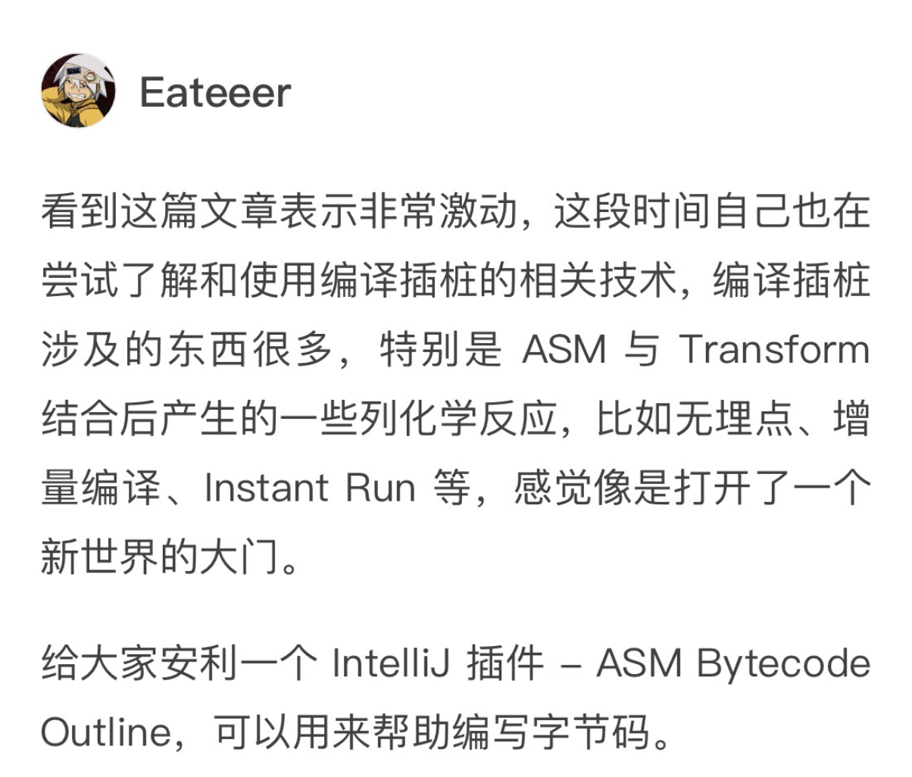
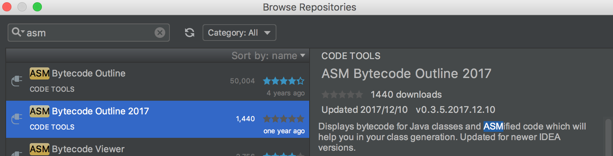
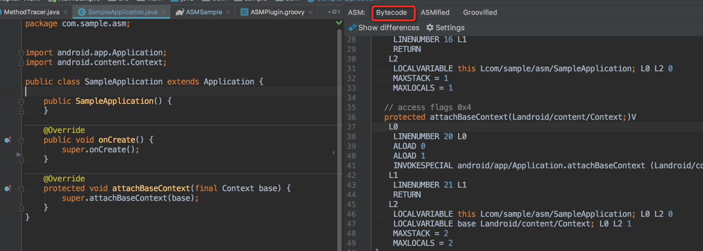
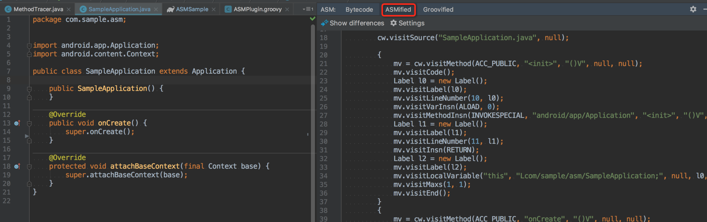
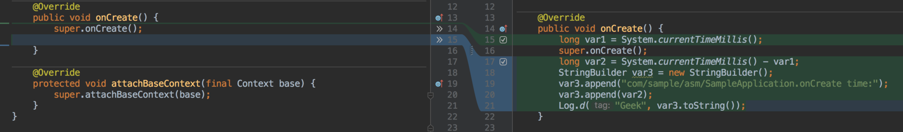
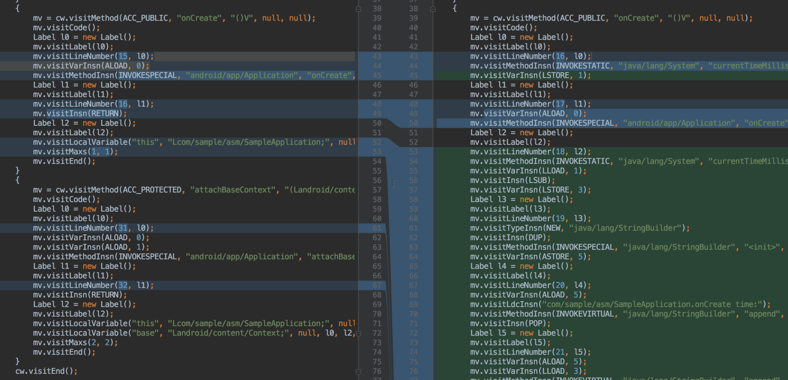
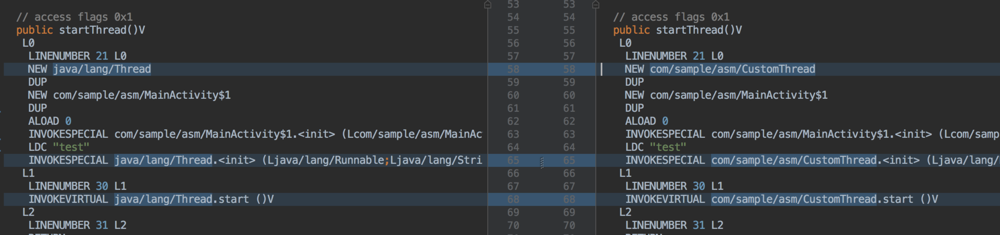

你好，我是孙鹏飞。
专栏上一期，绍文讲了编译插桩的三种方法：AspectJ、ASM、ReDex，以及它们的应用场景。学完以后你是不是有些动心，想赶快把它们应用到实际工作中去。但我也还了解到，不少同学其实接触插桩并不多，在工作中更是很少使用。由于这项技术太重要了，可以实现很多功能，所以我还是希望你通过理论 + 实践的方式尽可能掌握它。因此今天我给你安排了一期“强化训练”，希望你可以趁热打铁，保持学习的连贯性，把上一期的理论知识，应用到今天插桩的练习上。
为了尽量降低上手的难度，我尽量给出详细的操作步骤，相信你只要照着做，并结合专栏上期内容的学习，你一定可以掌握插桩的精髓。
ASM 插桩强化练习

在上一期里，Eateeer 同学留言说得非常好，提到了一个工具，我也在使用这个工具帮助自己理解 ASM。安装“ASM Bytecode Outline”也非常简单，只需要在 Android Studio 中的 Plugin 搜索即可。

ASM Bytecode Outline 插件可以快速展示当前编辑类的字节码表示，也可以展示出生成这个类的 ASM 代码，你可以在 Android Studio 源码编译框内右键选择“Show Bytecode Outline“来查看，反编译后的字节码在右侧展示。
我以今天强化练习中的SampleApplication类为例，具体字节码如下图所示。

除了字节码模式，ASM Bytecode Outline 还有一种“ASMified”模式，你可以看到 SampleApplication 类应该如何用 ASM 代码构建。

下面我们通过两个例子的练习，加深对 ASM 使用的理解。
1. 通过 ASM 插桩统计方法耗时
今天我们的第一个练习是：通过 ASM 实现统计每个方法的耗时。怎么做呢？请你先不要着急，同样以 SampleApplication 类为例，如下图所示，你可以先手动写一下希望实现插桩前后的对比代码。

那这样“差异”代码怎么样转化了 ASM 代码呢？ASM Bytecode Outline 还有一个非常强大的功能，它可以展示相邻两次修改的代码差异，这样我们可以很清晰地看出修改的代码在字节码上的呈现。

“onCreate”方法在“ASMified”模式的前后差异代码，也就是我们需要添加的 ASM 代码。在真正动手去实现插桩之前，我们还是需要理解一下 ASM 源码中关于 Core API 里面 ClassReader、ClassWriter、ClassVisitor 等几个类的用法。
我们使用 ASM 需要先通过 ClassReader 读入 Class 文件的原始字节码，然后使用 ClassWriter 类基于不同的 Visitor 类进行修改，其中 COMPUTE_MAXS 和 EXPAND_FRAMES 都是需要特别注意的参数。
ClassReader classReader = new ClassReader(is);//COMPUTE_MAXS 说明使用 ASM 自动计算本地变量表最大值和操作数栈的最大值ClassWriter classWriter = new ClassWriter(ClassWriter.COMPUTE_MAXS);ClassVisitor classVisitor = new TraceClassAdapter(Opcodes.ASM5, classWriter);//EXPAND_FRAMES 说明在读取 class 的时候同时展开栈映射帧 (StackMap Frame)，在使用 AdviceAdapter 里这项是必须打开的classReader.accept(classVisitor, ClassReader.EXPAND_FRAMES);如果要统计每个方法的耗时，我们可以使用 AdviceAdapter 来实现。它提供了 onMethodEnter() 和 onMethodExit() 函数，非常适合实现方法的前后插桩。具体的实现，你可以参考今天强化练习中的TraceClassAdapter的实现：
private int timeLocalIndex = 0;@Overrideprotected void onMethodEnter() { mv.visitMethodInsn(INVOKESTATIC, "java/lang/System", "currentTimeMillis", "()J", false); timeLocalIndex = newLocal(Type.LONG_TYPE); // 这个是 LocalVariablesSorter 提供的功能，可以尽量复用以前的局部变量 mv.visitVarInsn(LSTORE, timeLocalIndex);} @Overrideprotected void onMethodExit(int opcode) { mv.visitMethodInsn(INVOKESTATIC, "java/lang/System", "currentTimeMillis", "()J", false); mv.visitVarInsn(LLOAD, timeLocalIndex); mv.visitInsn(LSUB);// 此处的值在栈顶 mv.visitVarInsn(LSTORE, timeLocalIndex);// 因为后面要用到这个值所以先将其保存到本地变量表中 int stringBuilderIndex = newLocal(Type.getType("java/lang/StringBuilder")); mv.visitTypeInsn(Opcodes.NEW, "java/lang/StringBuilder"); mv.visitInsn(Opcodes.DUP); mv.visitMethodInsn(Opcodes.INVOKESPECIAL, "java/lang/StringBuilder", "<init>", "()V", false); mv.visitVarInsn(Opcodes.ASTORE, stringBuilderIndex);// 需要将栈顶的 stringbuilder 保存起来否则后面找不到了 mv.visitVarInsn(Opcodes.ALOAD, stringBuilderIndex); mv.visitLdcInsn(className + "." + methodName + " time:"); mv.visitMethodInsn(Opcodes.INVOKEVIRTUAL, "java/lang/StringBuilder", "append", "(Ljava/lang/String;)Ljava/lang/StringBuilder;", false); mv.visitInsn(Opcodes.POP);// 将 append 方法的返回值从栈里 pop 出去 mv.visitVarInsn(Opcodes.ALOAD, stringBuilderIndex); mv.visitVarInsn(Opcodes.LLOAD, timeLocalIndex); mv.visitMethodInsn(Opcodes.INVOKEVIRTUAL, "java/lang/StringBuilder", "append", "(J)Ljava/lang/StringBuilder;", false); mv.visitInsn(Opcodes.POP);// 将 append 方法的返回值从栈里 pop 出去 mv.visitLdcInsn("Geek"); mv.visitVarInsn(Opcodes.ALOAD, stringBuilderIndex); mv.visitMethodInsn(Opcodes.INVOKEVIRTUAL, "java/lang/StringBuilder", "toString", "()Ljava/lang/String;", false); mv.visitMethodInsn(Opcodes.INVOKESTATIC, "android/util/Log", "d", "(Ljava/lang/String;Ljava/lang/String;)I", false);// 注意： Log.d 方法是有返回值的，需要 pop 出去 mv.visitInsn(Opcodes.POP);// 插入字节码后要保证栈的清洁，不影响原来的逻辑，否则就会产生异常，也会对其他框架处理字节码造成影响}具体实现和我们在 ASM Bytecode Outline 看到的大同小异，但是这里需要注意局部变量的使用。在练习的例子中用到了 AdviceAdapter 的一个很重要的父类 LocalVariablesSorter，这个类提供了一个很好用的方法 newLocal，它可以分配一个本地变量的 index，而不用用户考虑本地变量的分配和覆盖问题。
另一个需要注意的情况是，我们在最后的时候需要判断一下插入的代码是否会在栈顶上遗留不使用的数据，如果有的话需要消耗掉或者 POP 出去，否则就会导致后续代码的异常。
这样我们就可以快速地将这一大段字节码完成了。
2. 替换项目中的所有的 new Thread
今天另一个练习是：替换项目中所有的 new Thread，换为自己项目的 CustomThread 类。在实践中，你可以通过这个方法，在 CustomThread 增加统计代码，从而实现统计每个线程运行的耗时。
不过这也是一个相对来说坑比较多的情况，你可以提前考虑一下可能会遇到什么状况。同样我们通过修改MainActivity的 startThread 方法里面的 Thread 对象改变成 CustomThread，通过 ASM Bytecode Outline 看看在字节码上面的差异：

InvokeVirtual 是根据 new 出来的对象来调用，所以我们只需要替换 new 对象的过程就可以了。这里需要处理两个指令：一个 new、一个 InvokeSpecial。在大多数情况下这两条指令是成对出现的，但是在一些特殊情况下，会遇到直接从其他位置传递过来一个已经存在的对象，并强制调用构造方法的情况。
而我们需要处理这种特殊情况，所以在例子里我们需要判断 new 和 InvokeSpecial 是否是成对出现的。
private boolean findNew = false;// 标识是否遇到了 new 指令 @Override public void visitTypeInsn(int opcode, String s) { if (opcode == Opcodes.NEW && "java/lang/Thread".equals(s)) { findNew = true;// 遇到 new 指令 mv.visitTypeInsn(Opcodes.NEW, "com/sample/asm/CustomThread");// 替换 new 指令的类名 return; } super.visitTypeInsn(opcode, s); } @Override public void visitMethodInsn(int opcode, String owner, String name, String desc, boolean itf) { // 需要排查 CustomThread 自己 if ("java/lang/Thread".equals(owner) && !className.equals("com/sample/asm/CustomThread") && opcode == Opcodes.INVOKESPECIAL && findNew) { findNew= false; mv.visitMethodInsn(opcode, "com/sample/asm/CustomThread", name, desc, itf);// 替换 INVOKESPECIAL 的类名，其他参数和原来保持一致 return; } super.visitMethodInsn(opcode, owner, name, desc, itf); }new 指令的形态相对特殊，比如我们可能会遇到下面的情况：
new A(new B(2));字节码如下，你会发现两个 new 指令连在一起。
NEW A DUP NEW B DUP ICONST_2 INVOKESPECIAL B.<init> (I)V INVOKESPECIAL A.<init> (LB;)V虽然 ASM Bytecode Outline 工具可以帮助我们完成很多场景下的 ASM 需求，但是在处理字节码的时候还是需要考虑很多种可能出现的情况，这点需要你注意一下每个指令的特征。所以说在稍微复杂一些的情况下，我们依然需要对 ASM 字节码以及 ASM 源码中的一些工具类有所了解，并且需要很多次的实践，毕竟实践是最重要的。
最后再留给你一个思考题，如何给某个方法增加一个 try catch 呢？你可以尝试一下在今天强化练习的代码里根据我提供的插件示例实现一下。
强化练习的代码：https://github.com/AndroidAdvanceWithGeektime/Chapter-ASM
福利彩蛋
学到这里相信你肯定会认同成为一个 Android 开发高手的确不容易，能够坚持学习和练习，并整理输出分享更是不易。但是也确实有同学坚持下来了。
还记得在专栏导读里我们的承诺吗？我们会选出坚持参与学习并分享心得的同学，送出 2019 年 GMTC 大会的门票。今天我们就来兑现承诺，送出价值 4800 元的 GMTC 门票一张。获得这个“大礼包”的同学是@唯鹿，他不仅提交了作业，更是在博客里分享了每个练习 Sample 实现的过程和心得，并且一直在坚持。我在文稿里贴了他的练习心得文章链接，如果你对于之前的练习 Sample 还有不明白的地方，可以参考唯鹿同学的实现过程。
GMTC 门票还有剩余，给自己一个进阶的机会，从现在开始一切都还来得及。
小程序、Flutter、移动 AI、工程化、性能优化…大前端的下一站在哪里？GMTC 2019 全球大前端技术大会将于 6 月北京盛大开幕，来自 Google、BAT、美团、京东、滴滴等一线前端大牛将与你面对面共话前端那些事，聊聊大前端的最新技术趋势和最佳实践案例。
目前大会最低价 7 折购票火热进行中，讲师和议题也持续招募中，点击下方图片了解更多大会详情！
COMMUNITY NOTES
读者评论
感谢老师的认可与鼓励，我会继续坚持学习与分享！🙏
@splm 我的方法是在本地建repo，然后在项目中classpath引进去，然后在apply进去，但是修改了代码调试需要重新uploadArchives，就很麻烦，有什么好的调试办法吗
Could not find implementation class for plugin error when using Gradle 4.1+。有遇到这个问题的朋友，可以肯定是找不到类，第一要看插件的properties文件命名和里面的内容指向，命名是用来apply的，内容是用来找到对应插件类，要明确这个关系。第二，要仔细groovy文件是否有后缀。我之前就是粗心连续的回车，导致忘记给文件家后缀，一直报这个恶心的错误。
如果不上传maven的话，本地工程使用，提示找不到插件类，这个是什么问题？
这个插件是不是在AS3.3上失效了啊
请问在写Transform的过程中，如何debug代码呢？初期对ASM不熟悉，在写的过程中如果能debug最好了